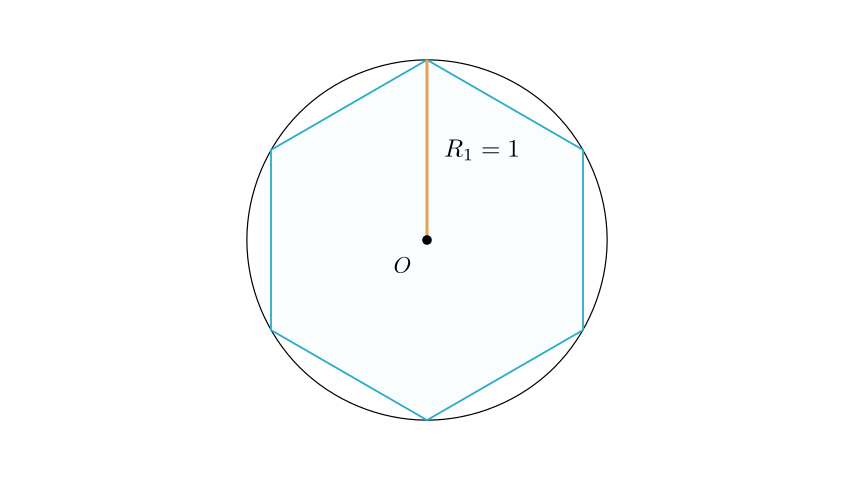
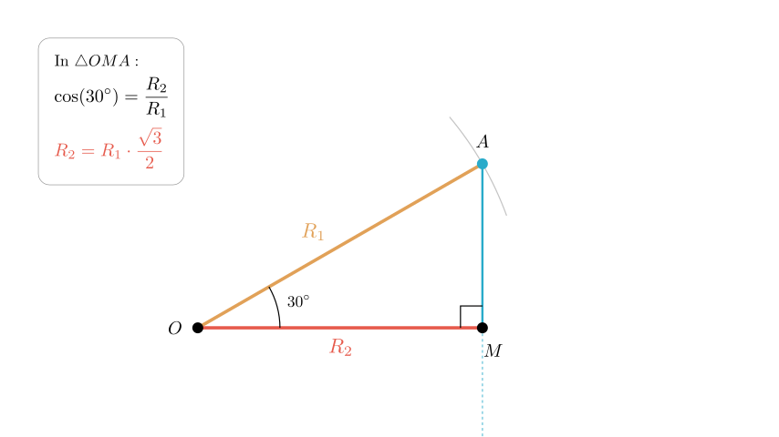
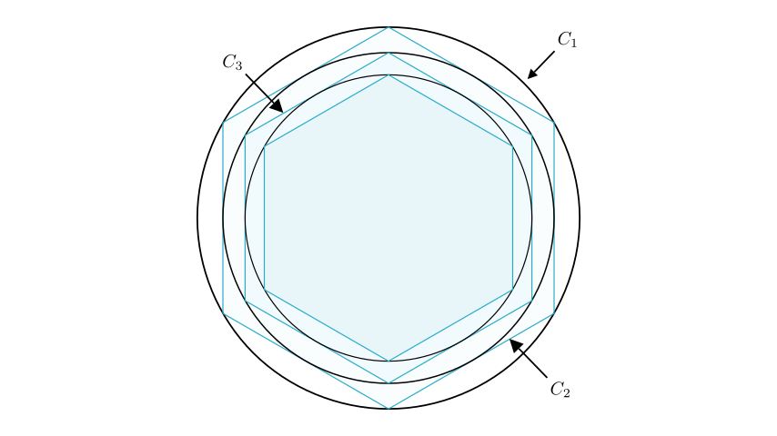

As shown in the figure, a regular hexagon is inscribed in a circle with a radius of 1 m. Then, the inscribed circle of this regular hexagon is drawn. Inside this new circle, another regular hexagon is inscribed. This process continues infinitely. The sum of the areas of all these circles is \(S = \underline{\hspace{2em}} m^2\).
To solve this problem, we need to find the pattern in the areas of the successive circles. We will: 1. Calculate the area of the first circle. 2. Determine the relationship between the radius of a circle and the radius of the next smaller circle inscribed in the hexagon. 3. Identify the common ratio of the areas. 4. Use the formula for the sum of an infinite geometric series to find the total area.

Step 1: Analyze the First Circle (\(C_1\))The problem states that the radius of the first circle is 1 m. Let \(R_1\) be the radius of the first circle. \[R_1 = 1\]
The area of the first circle (\(A_1\)) is calculated as: \[A_1 = \pi R_1^2 = \pi (1)^2 = \pi\]
Step 2: Analyze the Relationship for the Second Circle (\(C_2\))The second circle is the inscribed circle of the regular hexagon that sits inside the first circle. To find its radius (\(R_2\)), we need to look at the geometry of the regular hexagon. The radius of the inscribed circle corresponds to the apothem of the hexagon (the distance from the center to the midpoint of a side).

By connecting the center of the hexagon to a vertex and to the midpoint of a side, we form a right-angled triangle.
In a regular hexagon, the central angle subtended by one side is \(60^\circ\). The line to the vertex bisects this angle, or we can simply observe the properties of the equilateral triangles that make up a hexagon. However, looking at the right triangle formed by the radius (\(R_1\)) and the apothem (\(R_2\)):
Using trigonometry: \[\cos(30^\circ) = \frac{\text{adjacent}}{\text{hypotenuse}} = \frac{R_2}{R_1}\]
Solving for \(R_2\): \[R_2 = R_1 \times \cos(30^\circ) = 1 \times \frac{\sqrt{3}}{2} = \frac{\sqrt{3}}{2}\]
Now, we calculate the area of the second circle (\(A_2\)): \[A_2 = \pi R_2^2 = \pi \left( \frac{\sqrt{3}}{2} \right)^2 = \pi \left( \frac{3}{4} \right) = \frac{3}{4}\pi\]

Step 3: Generalize the PatternThis process repeats infinitely. For any circle \(n\) and the next circle \(n+1\): \[R_{n+1} = R_n \times \frac{\sqrt{3}}{2}\]
Consequently, the ratio of their areas is the square of the ratio of their radii: \[\frac{A_{n+1}}{A_n} = \left( \frac{R_{n+1}}{R_n} \right)^2 = \left( \frac{\sqrt{3}}{2} \right)^2 = \frac{3}{4}\]
This means the areas of the circles form an infinite geometric series:
The sum \(S\) of an infinite geometric series is given by the formula: \[S = \frac{a}{1 - q}\]
Substituting our values: \[S = \frac{\pi}{1 - \frac{3}{4}}\] \[S = \frac{\pi}{\frac{1}{4}}\] \[S = 4\pi\]
The sum of the areas of all the circles is \(4\pi\).
1. We identified the radius of the first circle as 1. 2. We used the geometry of a regular hexagon to find that the radius scales by a factor of \(\frac{\sqrt{3}}{2}\) at each step. 3. This implies the area scales by a factor of \(\frac{3}{4}\) at each step. 4. Summing the geometric series \(\pi + \frac{3}{4}\pi + \frac{9}{16}\pi + \dots\) resulted in \(4\pi\).
Final Answer: \(4\pi\)